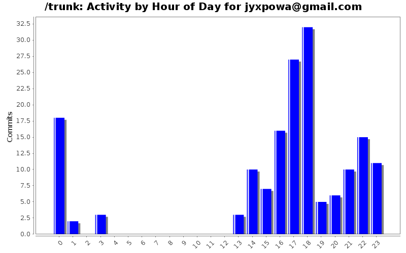
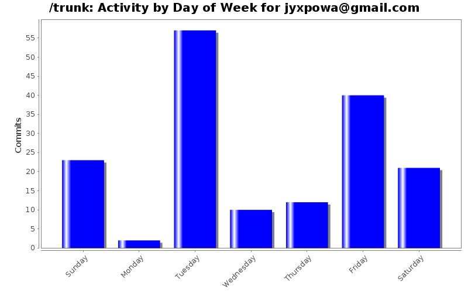
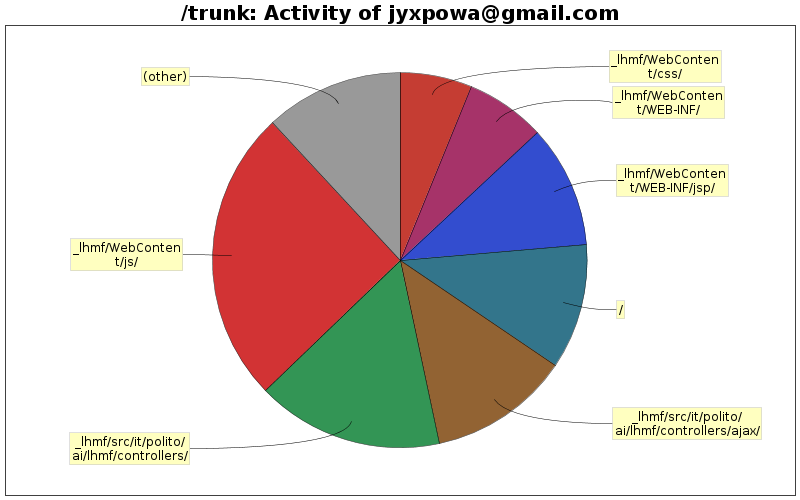

| Directory | Changes | Lines of Code | Lines per Change |
|---|---|---|---|
| Totals | 165 (100.0%) | 6963 (100.0%) | 42.2 |
| _lhmf/WebContent/js/ | 14 (8.5%) | 1763 (25.3%) | 125.9 |
| _lhmf/src/it/polito/ai/lhmf/controllers/ | 20 (12.1%) | 1124 (16.1%) | 56.2 |
| _lhmf/src/it/polito/ai/lhmf/controllers/ajax/ | 10 (6.1%) | 847 (12.2%) | 84.7 |
| / | 5 (3.0%) | 751 (10.8%) | 150.2 |
| _lhmf/WebContent/WEB-INF/jsp/ | 30 (18.2%) | 737 (10.6%) | 24.5 |
| _lhmf/WebContent/WEB-INF/ | 6 (3.6%) | 480 (6.9%) | 80.0 |
| _lhmf/WebContent/css/ | 10 (6.1%) | 431 (6.2%) | 43.1 |
| _lhmf/src/it/polito/ai/lhmf/model/ | 12 (7.3%) | 208 (3.0%) | 17.3 |
| _lhmf/src/it/polito/ai/lhmf/util/ | 7 (4.2%) | 205 (2.9%) | 29.2 |
| _lhmf/src/it/polito/ai/lhmf/ | 6 (3.6%) | 184 (2.6%) | 30.6 |
| _lhmf/WebContent/WEB-INF/jsp/mobile/ | 2 (1.2%) | 107 (1.5%) | 53.5 |
| _lhmf/WebContent/WEB-INF/tags/ | 3 (1.8%) | 54 (0.8%) | 18.0 |
| _lhmf/ | 3 (1.8%) | 31 (0.4%) | 10.3 |
| _lhmf/src/it/polito/ai/lhmf/filters/ | 1 (0.6%) | 30 (0.4%) | 30.0 |
| _lhmf/src/it/polito/ai/lhmf/json/ | 4 (2.4%) | 8 (0.1%) | 2.0 |
| _lhmf/WebContent/js/openid-selector/css/ | 1 (0.6%) | 3 (0.0%) | 3.0 |
| _lhmf/build/ | 1 (0.6%) | 0 (0.0%) | 0.0 |
| _lhmf/WebContent/img/ | 9 (5.5%) | 0 (0.0%) | 0.0 |
| _lhmf/WebContent/WEB-INF/lib/ | 1 (0.6%) | 0 (0.0%) | 0.0 |
| Site/images/ | 12 (7.3%) | 0 (0.0%) | 0.0 |
| Site/ | 8 (4.8%) | 0 (0.0%) | 0.0 |

Creato insfrastruttura di presentazione per Responsabile.
705 lines of code changed in 6 files:
NUOVO DATABASE. Le Modifiche sono sostanziose. Era necessario. Riadattare il codice se non funziona (dopo aver sistemato Hibernate)
425 lines of code changed in 1 file:
Aggiunta modifica per il db (id product_category da mettere come auto_increment)
2 lines of code changed in 1 file:
Descrizione modifiche database in README
25 lines of code changed in 1 file:
3 lines of code changed in 1 file:
modificati link con spring:uri
5 lines of code changed in 1 file:
Creato pagina Login per Mobile
373 lines of code changed in 4 files:
Bug del timestamp della data di registrazione nella lista membri risolto
4 lines of code changed in 1 file:
Pannello Admin Completato. (Bisogna fare tutta la parte relativa ad ordini e prodotti). Implementato anche la generazione delle password. Modificato modalità di invio email. Implementato l'authMail in modo tale che attivi direttamente l'account se è stato creato dall'admin (Ancora da Testare).
Perfavore se trovate bug fatemelo sapere.
631 lines of code changed in 11 files:
Attiva Membri Completato. Risolti bug registrazione. Qualche piccolezza ancora da fare.
432 lines of code changed in 6 files:
Finito attivazione Account da parte dell'admin. Per ora funziona solo per membri e responsabili. Devo ancora integrare fornitori.
15 lines of code changed in 2 files:
Sto lavorando sulla lista membri da attivare.
236 lines of code changed in 5 files:
Registrazione Forenitore Completata.
Cose da fare/aggiustare:
- Generare le password ed inviarle all'email.
- Modificare l'authMail affinche attivi anche i suppliers (ora fa solo membri e responsabili)
- Modificare il getMembersRespString in modo che restituisca solo i membri attivati.
346 lines of code changed in 5 files:
Lato client impostato per registrare responsabili e fornitori. Manca lato server. Sarà fatto presto abbiate fede.
192 lines of code changed in 6 files:
Non entra nel metodo ajax/newMember. Non riesco a capire il perchè.
4 lines of code changed in 3 files:
Modificato il controllo ajax per newmember. Sezione admin ancora da finire.
606 lines of code changed in 9 files:
Sistemato parte log Admin.
47 lines of code changed in 3 files:
Puttanate
53 lines of code changed in 6 files:
Aggiunto invio messaggio all'admin con richiesta di attivazione account (sempre dopo la verifica della mail, quindi subito per facebook e openid, alla conferma per gli utenti normali).
111 lines of code changed in 2 files:
Aggiunto controllo sulle email. Non viene permessa la registrazione con una mail già in uso.
84 lines of code changed in 1 file:
(30 more)